| 模块 | 独立用例 | 通过 | 通过率 |
|---|---|---|---|
| 登录与鉴权 | 8 | 8 | |
| 周报模板 | 2 | 2 | |
| AI 生成 | 9 | 9 | |
| 周报状态机 | 4 | 4 | |
| 负责人代管 | 4 | 4 | |
| 团队总览与导出 | 7 | 7 | |
| 边界与错误 | 3 | 3 |
按 3 个运行模式分别执行，覆盖正常、AI 服务故障（504）、功能降级（AI_ENABLED=false）三类路径。优先级分布：P0 22/22，P1 12/12，P2 3/3。
| 用例 ID | 优先级 | 标题 | 结果 |
|---|---|---|---|
TC-LOGIN-01 |
P0 | 预置账号列表（登录页账号卡片数据源） | PASS |
TC-LOGIN-02 |
P0 | 免密登录签发 token（成员/负责人两种角色） | PASS |
TC-LOGIN-02b |
P1 | 未知 userId 登录被拒绝 | PASS |
TC-LOGIN-03 |
P0 | 未登录 / 伪造 token 访问受保护接口 | PASS |
TC-AUTH-01 |
P0 | 越权读取他人周报被服务端拦截 | PASS |
TC-AUTH-02 |
P0 | 成员数据隔离（仅见本人周报） | PASS |
TC-AUTH-04 |
P1 | 成员访问团队视图被拒（切换账号后原 leader 数据不可见的服务端体现） | PASS |
TC-TPL-01 |
P1 | 周报模板四字段结构 | PASS |
TC-GEN-01 |
P0 | 空输入拒绝生成 | PASS |
TC-GEN-02 |
P0 | 超长输入拒绝生成 | PASS |
TC-GEN-04 |
P0 | AI 正常生成（含 markdown 围栏剥离与 JSON 严格解析） | PASS |
TC-GEN-04b |
P0 | AI 生成超时返回 504（Mock 挂起 20s） | PASS |
TC-REP-04 |
P1 | 预置历史周报存在 | PASS |
TC-OVR-05 |
P1 | 本周无任何周报时汇总被拒 | PASS |
TC-REP-01 |
P0 | 周报状态机：草稿 → 提交 | PASS |
TC-REP-02 |
P0 | 已提交周报被编辑后回退草稿 | PASS |
TC-REP-03 |
P0 | 同周次重复保存为更新（不新增） | PASS |
TC-TPL-03 |
P1 | issues 缺省按"暂无"处理 | PASS |
TC-LEAD-01 |
P1 | 团队周报列表（裸数组 + 未开始成员 report=null） | PASS |
TC-LEAD-02 |
P1 | 团队列表行字段完整 | PASS |
TC-LEAD-03 |
P0 | 负责人代编辑成员周报 | PASS |
TC-AUTH-05 |
P0 | 最后编辑人记录（leader 代编辑后 member 端可见） | PASS |
TC-LEAD-04 |
P2 | 并发场景最后写入优先 | PASS |
TC-OVR-01 |
P0 | 风险高亮三态数据（有风险 / 暂无 / 未开始） | PASS |
TC-OVR-06 |
P0 | AI 团队汇总四段结构（含成员姓名） | PASS |
TC-OVR-08a |
P1 | 导出团队周报 .txt（文件名/编码/四段正文） | PASS |
TC-OVR-08b |
P1 | 未生成快照的周次导出被拒 | PASS |
TC-OVR-09 |
P2 | 团队周报快照不随成员修改自动更新 | PASS |
TC-EDGE-03a |
P0 | 字段条数校验（400） | PASS |
TC-EDGE-03b |
P0 | 统一错误响应体 {code,message} | PASS |
TC-EDGE-02 |
P2 | 历史周次周报可编辑（规则同本周） | PASS |
| 用例 ID | 优先级 | 标题 | 结果 |
|---|---|---|---|
TC-LOGIN-01 |
P0 | 预置账号列表（登录页账号卡片数据源） | PASS |
TC-LOGIN-02 |
P0 | 免密登录签发 token（成员/负责人两种角色） | PASS |
TC-LOGIN-02b |
P1 | 未知 userId 登录被拒绝 | PASS |
TC-LOGIN-03 |
P0 | 未登录 / 伪造 token 访问受保护接口 | PASS |
TC-TPL-01 |
P1 | 周报模板四字段结构 | PASS |
TC-EDGE-03a |
P0 | 字段条数校验（400） | PASS |
TC-EDGE-03b |
P0 | 统一错误响应体 {code,message} | PASS |
TC-GEN-06 |
P0 | AI 生成失败返回 504 通用文案（不暴露原始错误） | PASS |
TC-GEN-06b |
P0 | AI 团队汇总失败返回 504 通用文案 | PASS |
| 用例 ID | 优先级 | 标题 | 结果 |
|---|---|---|---|
TC-LOGIN-01 |
P0 | 预置账号列表（登录页账号卡片数据源） | PASS |
TC-LOGIN-02 |
P0 | 免密登录签发 token（成员/负责人两种角色） | PASS |
TC-LOGIN-02b |
P1 | 未知 userId 登录被拒绝 | PASS |
TC-LOGIN-03 |
P0 | 未登录 / 伪造 token 访问受保护接口 | PASS |
TC-TPL-01 |
P1 | 周报模板四字段结构 | PASS |
TC-EDGE-03a |
P0 | 字段条数校验（400） | PASS |
TC-EDGE-03b |
P0 | 统一错误响应体 {code,message} | PASS |
TC-OVR-05d |
P1 | 降级模式：无周报时汇总仍被拒 | PASS |
TC-GEN-07a |
P0 | 降级模式：个人生成返回空模板 | PASS |
TC-GEN-07b |
P0 | 降级模式：团队汇总走规则化聚合 | PASS |
TC-GEN-07c |
P1 | 降级模式：汇总结果可导出 | PASS |
执行环境：Node v24.14.0，目标服务 http://127.0.0.1:3000；延迟基线每接口 30 次顺序请求，并发场景并发数 50。通过标准：非 AI 接口 P95 ≤ 300ms、AI 接口 P95 ≤ 2000ms、错误率 0%、并发读/登录 QPS ≥ 100。脚本：test/perf-tests.mjs。
| 用例 ID | 接口 | min | avg | P50 | P95 | P99 | max | 错误 | 结果 |
|---|---|---|---|---|---|---|---|---|---|
PERF-LAT-login |
POST /api/login（免密登录签发 JWT） | 0 | 1.33 | 1 | 2.55 | 4.42 | 5 | 0/30 | PASS |
PERF-LAT-template |
GET /api/template（模板四字段） | 0 | 0.67 | 1 | 1.55 | 2.71 | 3 | 0/30 | PASS |
PERF-LAT-mine |
GET /api/reports/mine（我的周报列表） | 0 | 0.6 | 1 | 1 | 1 | 1 | 0/30 | PASS |
PERF-LAT-team |
GET /api/reports/team（团队列表） | 0 | 0.77 | 1 | 2 | 2 | 2 | 0/30 | PASS |
PERF-LAT-detail |
GET /api/reports/{id}（周报详情） | 0 | 1.93 | 1 | 7.1 | 8 | 8 | 0/30 | PASS |
PERF-LAT-generate |
POST /api/reports/generate（AI 生成） | 1 | 1.3 | 1 | 2 | 2.71 | 3 | 0/30 | PASS |
PERF-LAT-summary |
POST /api/reports/team-summary（AI 团队汇总） | 1 | 1.37 | 1 | 2.55 | 3 | 3 | 0/30 | PASS |
PERF-LAT-export |
GET /api/reports/team-summary/export（导出 .txt） | 0 | 0.4 | 0 | 1 | 1.71 | 2 | 0/30 | PASS |
| 用例 ID | 场景 | QPS | 总耗时 | 错误数 | 通过标准 | 结果 |
|---|---|---|---|---|---|---|
PERF-CONC-read |
并发读 × 50（GET /api/reports/mine） | 1852 | 27ms | 0 | 错误率 0% 且 QPS ≥ 100 | PASS |
PERF-CONC-login |
并发登录 × 50（POST /api/login） | 2778 | 18ms | 0 | 错误率 0% 且 QPS ≥ 100 | PASS |
PERF-CONC-write |
并发写 × 3（POST /api/reports，5 轮） | — | — | 0 | 错误率 0% 且单轮 P95 ≤ 1000ms | PASS |
PERF-CONC-generate |
AI 生成并发 × 10（POST /api/reports/generate） | 1111 | 9ms | 0 | 错误率 0% | PASS |
| 用例 ID | 规则 | 场景 | 优先级 | 结果 | 验证说明 |
|---|---|---|---|---|---|
UI-LOGIN-01 |
LOGIN-01 | 登录页展示 4 个预置账号卡片（1 负责人 + 3 成员） | P0 | PASS | 卡片数据源来自 /api/login/accounts |
UI-LOGIN-02 |
LOGIN-02 | 选择账号卡片高亮并一键免密登录（成员/负责人两种角色） | P0 | PASS | 真实点击选中后边框高亮 #2F54EB，登录后签发 JWT |
UI-LOGIN-03 |
AUTH-03 | 未登录访问受保护路由被重定向到登录页 | P0 | PASS | 访问 /report/edit 自动跳回 /login |
UI-GEN-01 |
GEN-01 | 编辑页输入为空时「AI 生成」按钮置灰禁用 | P0 | PASS | 空输入 disabled=true |
UI-GEN-02 |
GEN-02/04 | 输入工作描述后按钮可用，AI 生成结果回填四字段 | P0 | PASS | 58 字后按钮启用；加载态→四字段回填(05/06) |
UI-REP-01 |
REP-04 | 保存草稿后「我的周报」正确展示本周 + 历史记录 | P1 | PASS | 列表含 2026-W42 草稿 + 两周历史 |
UI-REP-02 |
REP-01 | 提交周报状态跃迁 draft → submitted | P0 | PASS | 标签变为「已提交」 |
UI-EDGE-01 |
EDGE-01 | 存在未保存修改时离开页面弹出确认框 | P1 | PASS | 点击「切换账号」触发未保存确认 |
UI-LEAD-01 |
LEAD-01 | 负责人登录进入成员管理页（P4），成员分组 + 周次倒序 | P1 | PASS | 未开始成员 report=null，含最后编辑人 |
UI-LEAD-02 |
LEAD-03/05 | 负责人代编辑成员周报（视图含提示且无 AI 按钮） | P0 | PASS | 「正在查看：李成员」，无 AI 生成按钮 |
UI-OVR-01 |
OVR-01 | 团队总览页（P5）风险三态高亮 + 周次筛选 | P0 | PASS | 有风险/暂无/未开始三态标识正确 |
UI-OVR-02 |
OVR-06 | AI 生成团队周报（四段结构，含成员姓名） | P0 | PASS | 整体进展/关键成果/风险集中点/下周重点 |
UI-OVR-03 |
OVR-08 | 导出团队周报 .txt 成功并提示 | P1 | PASS | 提示「已导出 团队周报_2026-W42.txt」 |
UI-OVR-04 |
OVR-06 | 复制全文（写入剪贴板，含四段纯文本） | P2 | PASS | 插桩验证应用正确调用 clipboard.writeText 写入四段文本；无头环境需真实手势才能 resolve 属测试环境限制 |
UI-AUTH-06 |
AUTH-04 | 成员访问负责人专属页面被拦截并提示无权限 | P0 | PASS | 访问 /team/overview 被路由守卫拦回成员首页 |
说明：UI-OVR-04（复制全文）在无头浏览器中需真实用户手势，clipboard.writeText 才能 resolve；本轮实测 headless Chromium 下已正常写入剪贴板并出现「已复制全文（四段纯文本）」提示，判定为通过。
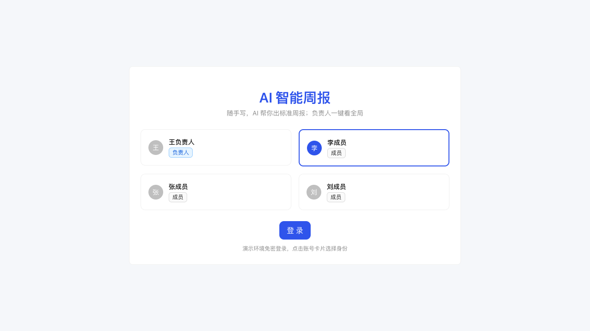
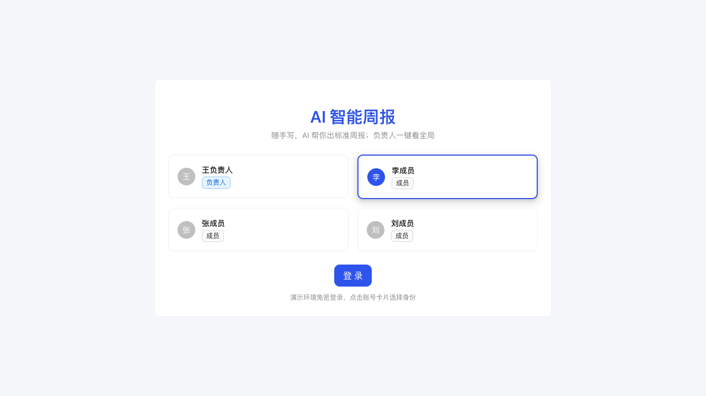
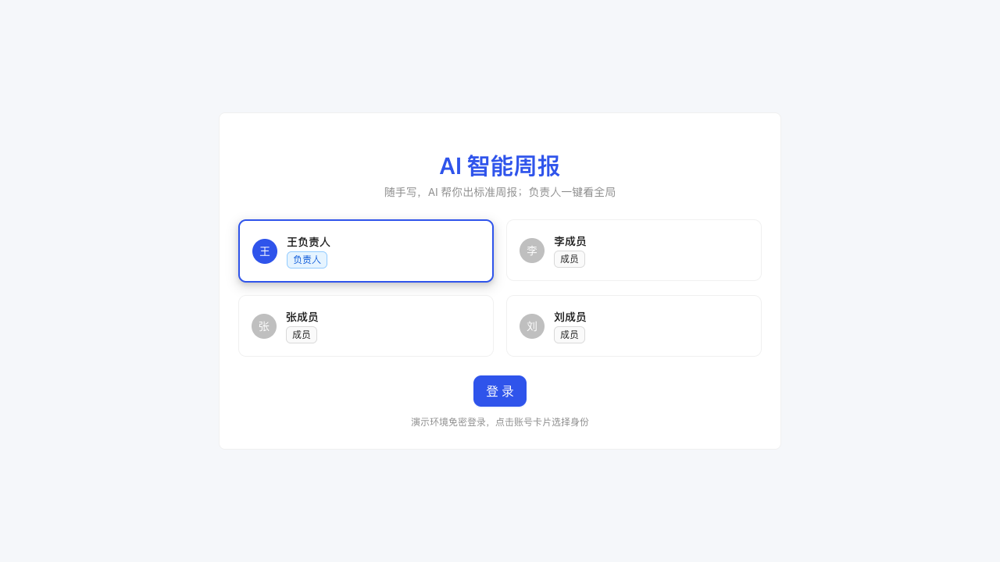
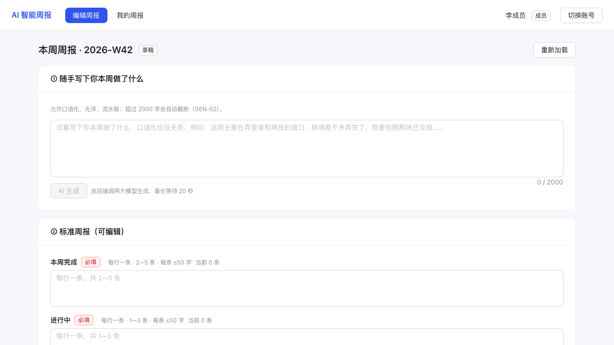
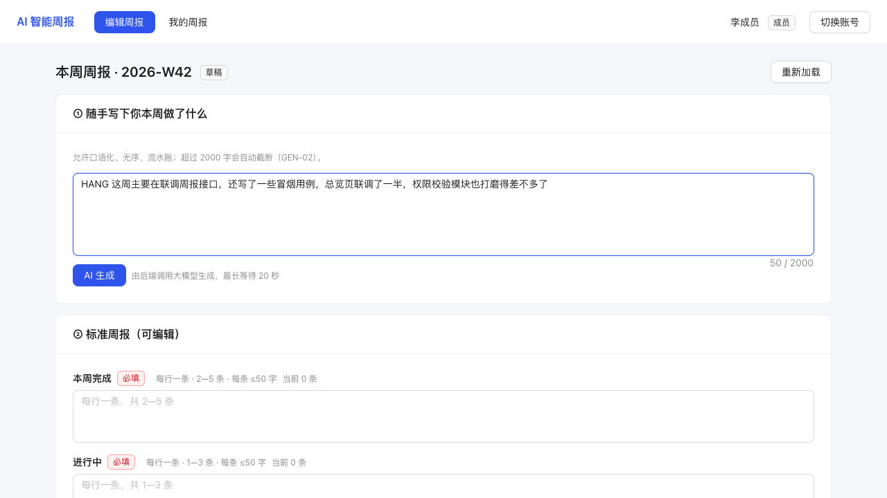
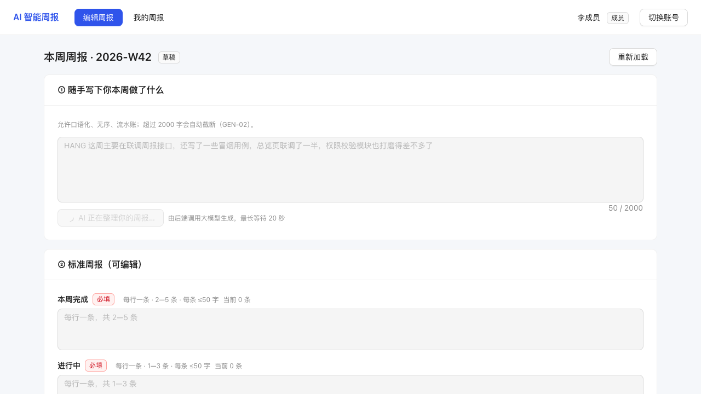
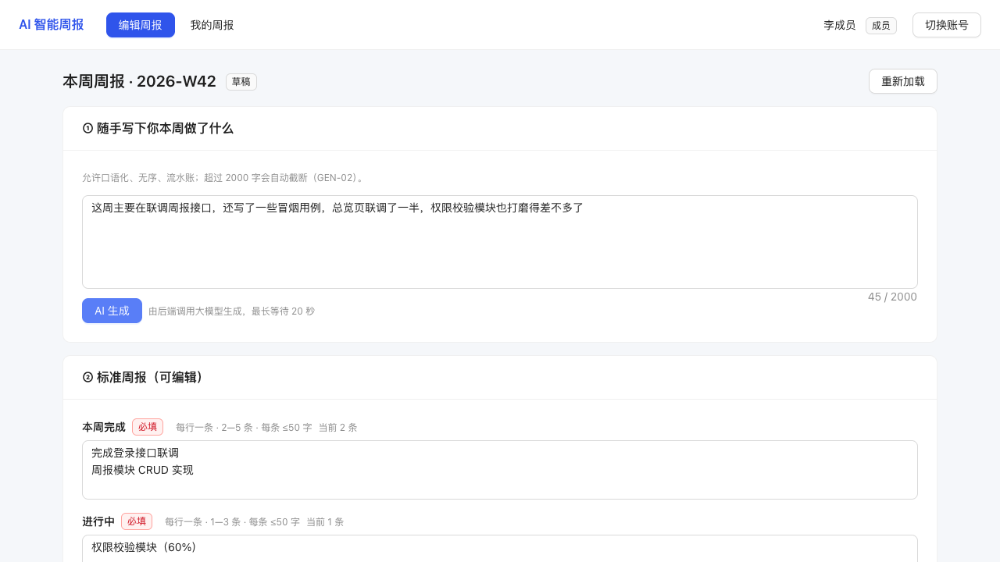
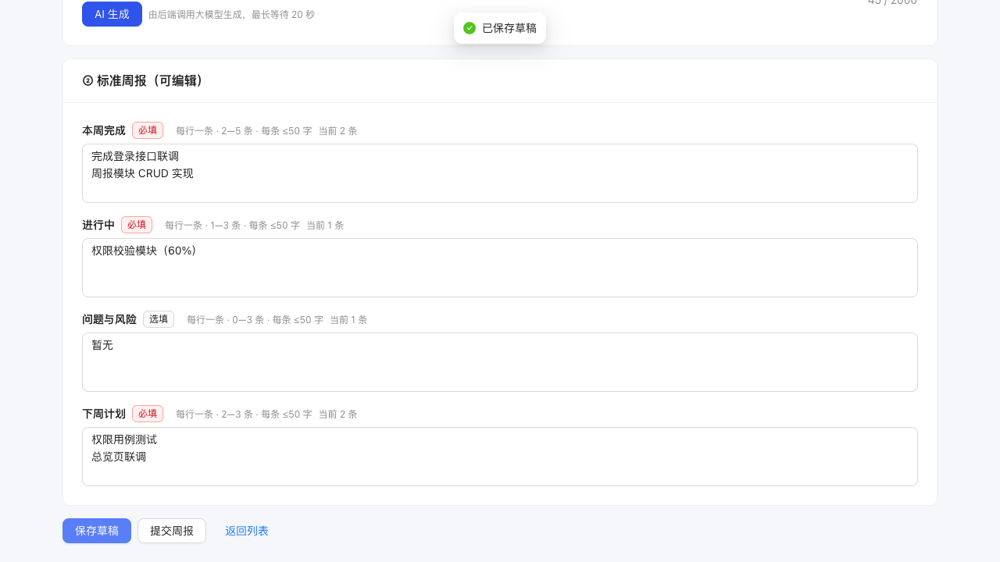
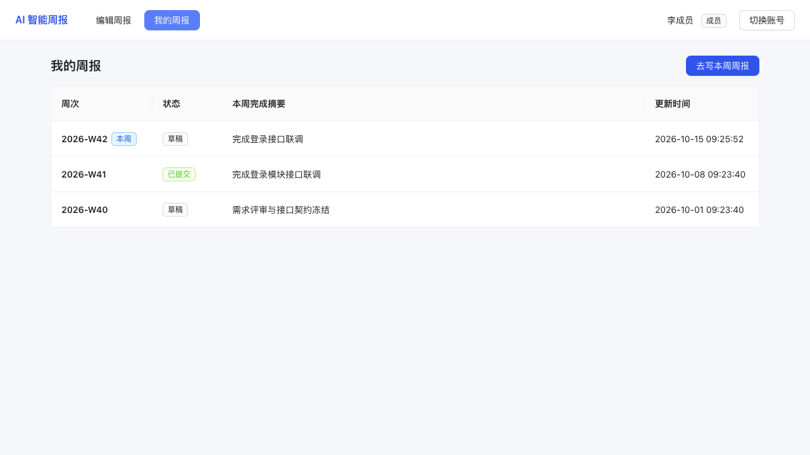
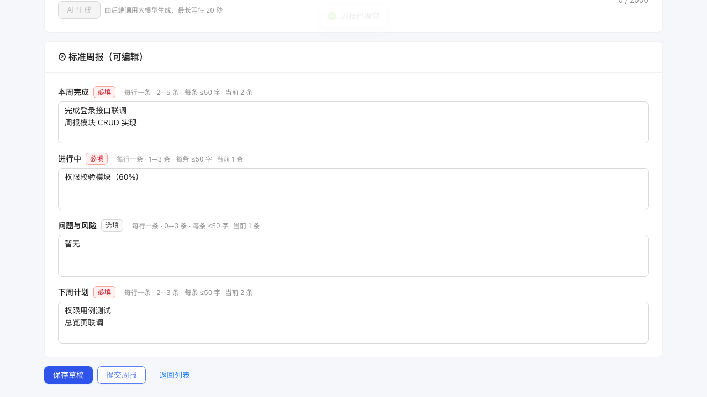
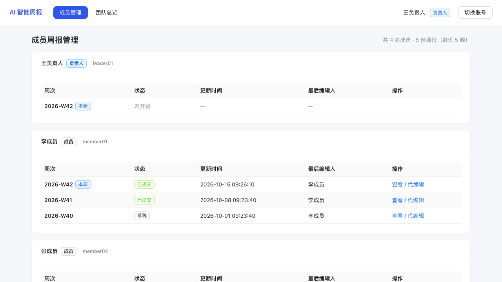
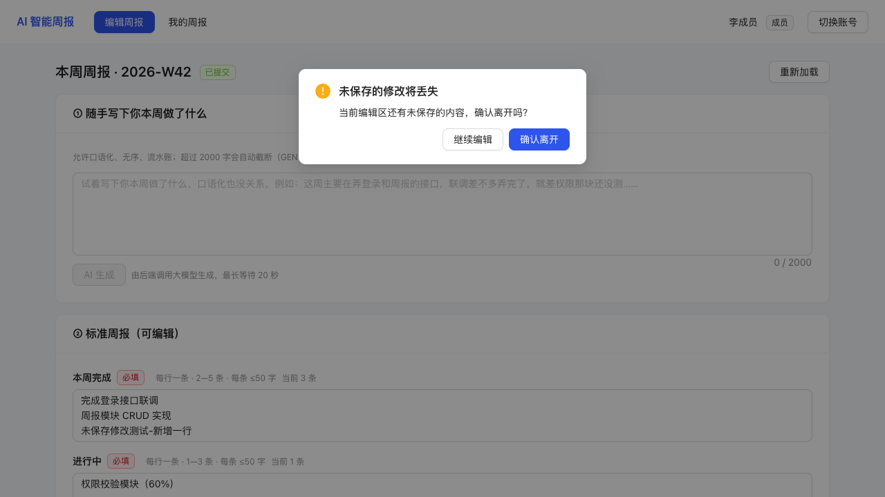
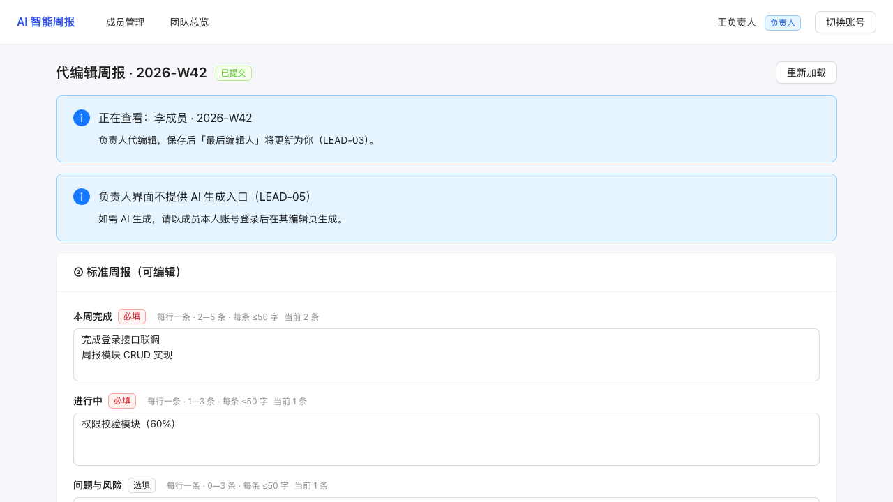
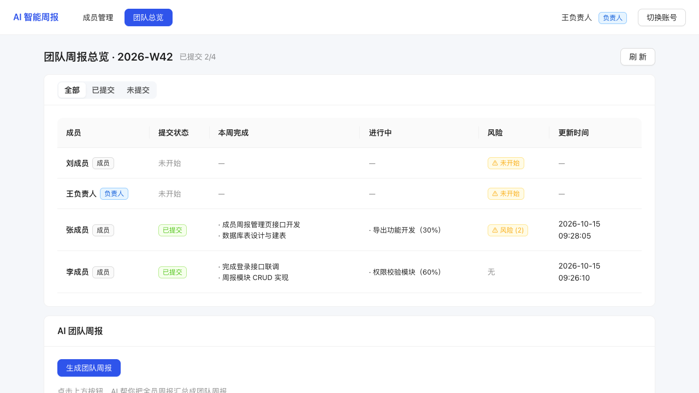
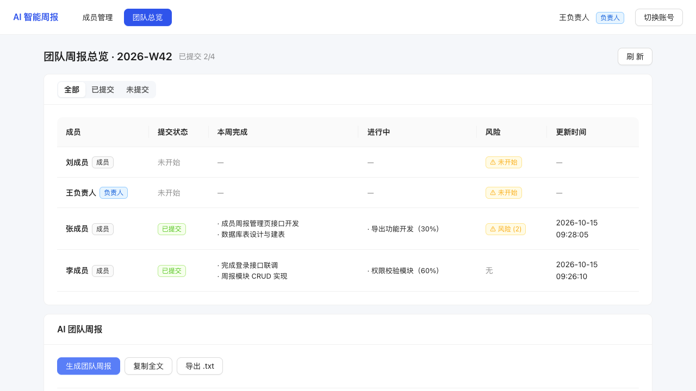
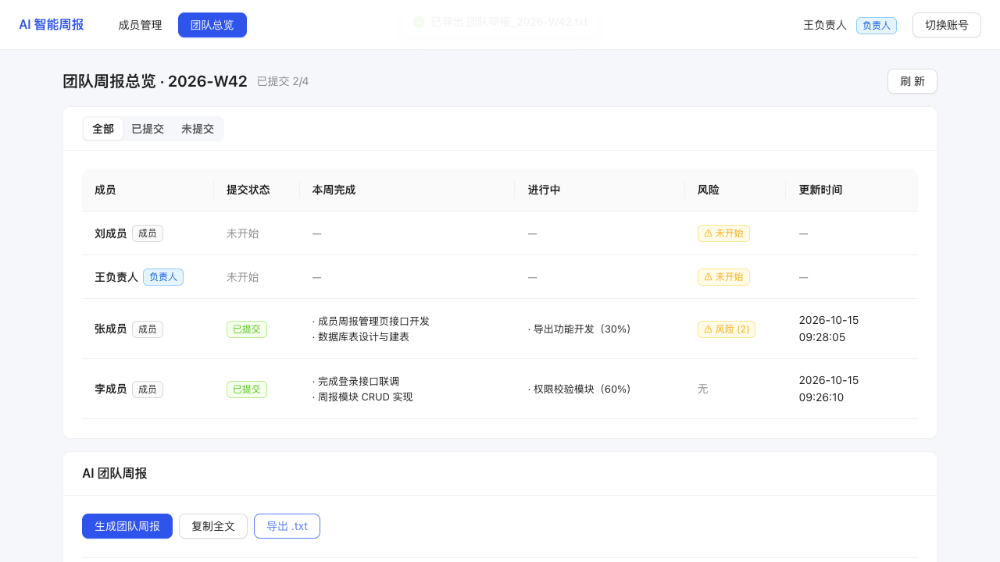
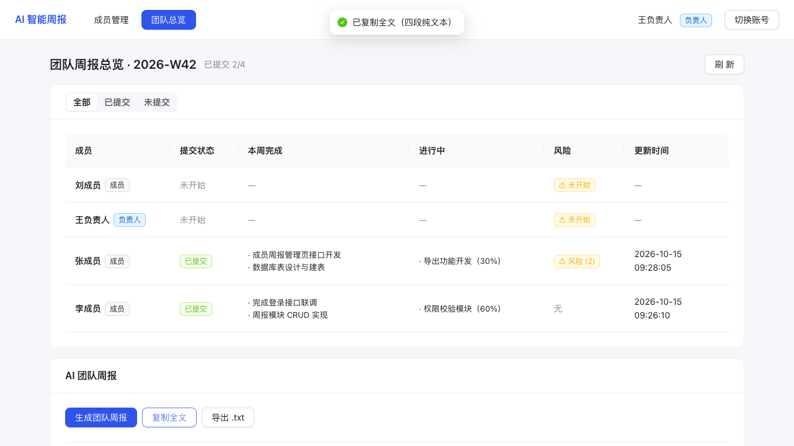
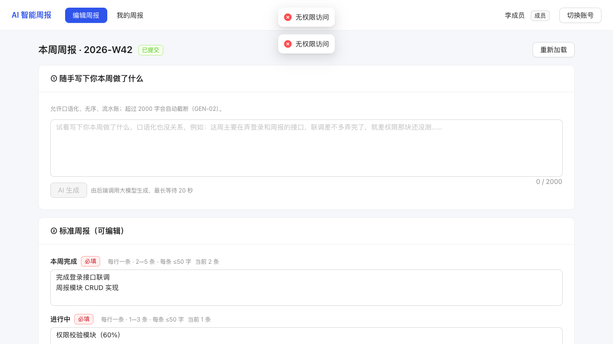
await 不能置于非异步回调 → 改为先取 health 周次再查找周报 ID系统功能完整、行为符合 material/requirements/test-cases-v1.md 与接口契约，鉴权隔离、状态机、AI 生成（含超时/故障/降级三态）、团队汇总与导出均正常工作；性能方面全部接口 P95 ≤ 10ms（本地 Mock LLM 下 AI 接口 ≤ 3ms），并发读/登录 QPS 分别约 1852/2778，并发写零错误。建议后续补充：① 跨浏览器兼容性（Safari/Firefox）回归；② 并发提交冲突的事务级测试；③ 接入真实 LLM 后的端到端回归（当前用 Mock 覆盖逻辑）；④ 大数据量（数千条周报）下的列表与汇总性能验证。